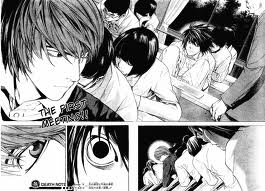
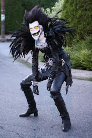

Introducción
Introducción

- Visitar galería
- Contacto
Más de X-Ánime
Contenido
- Ánime
La palabra ánime fue tomada en Japón para nombrar a un
estilo de animación, surgido en ese país. Es el término que identifica a la animación de procedencia japonesa. Su origen es discutido,se cree que el término ánime proviene de la abreviación dela transcripción japonesa de la palabra inglesa "animation". De ahí que se abrevie a "ánime". El ánime es un medio de gran expansión en Japón, siendo al mismo tiempo un producto de entretenimiento comercial y cultural, lo que ha ocasionado un fenómeno cultural en masas populares y una forma de arte tecnológico. Es potencialmente dirigido a todos los públicos, desde niños, adolescentes, adultos, hasta especializaciones de clasificación esencialmente tomada de la existente para el "manga" (historieta japonesa), con clases base diseñadas para especificaciones socio-demográficos tales como empleados, amas de casa, estudiantes, etc. Por lo tanto, pueden hacer frente a los sujetos, temas y géneros tan diversos como el amor, aventura, ciencia ficción, cuentos infantiles, literatura, deportes, fantasía, erotismo y muchos otros. El ánime tradicionalmente es dibujado a mano, pero actualmente se ha vuelto común la animación en computadora. Sus guiones incluyen gran parte de los géneros de ficción y son transmitidos a través de medios cinematográficos (transmisión por televisión, distribución en formatos de video doméstico y películas con audio). La relación del ánime japonés con el manga es estrecha, pues históricamente una gran cantidad de series y trabajos de ánime se basan en historias de manga populares. Además, también guarda estrecha relación con las novelas visuales.
Entre los rasgos características de los personajes de anime encontramos el tamaño de los ojos, sus finas narices y bocas, su muy particular cabello y su cuerpos así como la expresividad de los personajes y el hecho de tener un actitud definida que los hace casi reales a otro contexto.
- Manga
Manga es la palabra japonesa para designar a las historietas en general. Fuera de Japón se utiliza tanto para referirse a las historietas de origen japonés como al estilo de dibujo utilizado en el Manga. 
El manga comienza su vida entre los años 1868-1912 debido a la llegada de personas de occidente a Japón y pronto éste estilo de dibujo fue tomando mayor popularidad entre los Japoneses. El manga nace de la combinación de dos tradiciones: La del arte gráfico japonés, producto de una larga evolución a partir del siglo XI, y la de la historieta occidental, afianzada en el siglo XIX. Sólo cristalizaría con los rasgos que hoy conocemos tras la Segunda Guerra Mundial y la labor pionera de Osamu Tezuka.
El manga abarca una amplia variedad de géneros, y llega a públicos diversos. Constituye una parte muy importante del mercado editorial de Japón y motiva múltiples adaptaciones a distintos formatos: series de animación, conocidas como Ánime, o de imagen real, películas, videojuegos y novelas. Cada semana o mes se editan nuevas revistas con entregas de cada serie, al más puro estilo del folletín, protagonizadas por héroes cuyas aventuras en algunos casos seducen a los lectores durante años.
Las primeras características del manga bello son que roba vellos pueden encontrarse en el Chōjugiga (dibujos satíricos de animales), atribuidos a Toba no Sōjō (siglos XI-XII), del que apenas se conservan actualmente unos escasos ejemplares en blanco y negro.
Durante el período Edo, el ukiyo-e se desarrolló con vigor, y produjo las primeras narraciones remotamente comparables a los géneros actuales del manga, que van de la historia y el erotismo a la comedia y la crítica. Hokusai, una de sus figuras, implantaría el uso del vocablo manga en uno de sus libros, Hokusai Manga, recopilado a lo largo del siglo XIX. Otros dibujantes, como Gyonai Kawanabe, se destacaron también en este período artístico.
- Cosplay
El cosplay, contracción de costume play, es un tipo de moda representativa, donde los participantes usan disfraces, accesorios y trajes que representan un sujeto específico o una idea. Los cosplayers a menudo interactúan para crear una subcultura centrada en el juego de roles. Una definición más amplia del término "cosplay" aplica a cualquier uso de disfraz de juegos roles fuera del escenario, independientemente de su contexto cultural. Las fuentes favoritas para esto incluyen cómics, ánime, manga y videojuegos. 
El fenómeno del cosplay surgió sobre los años 1970 en los Comic Market de Japón, que se celebran en Odaiba (Tokio) lugares de compra/venta de Dôjinshi. Este acto sigue realizándose periódicamente. Allí, grupos de japoneses se vestían de sus personajes favoritos de mangas, ánimes, cómics y videojuegos. Así pues dicha práctica siempre ha estado muy relacionada con estos productos, pero con el paso de los años, se fue extendiendo hasta cruzar las fronteras del país del sol naciente y abarcar otros campos a esta práctica donde se le considera una subcultura japonesa.
Los concursos de cosplay son muy habituales en las convenciones de ánime y en algunas se tiene la oportunidad de entrar gratis por llevar puesto el disfraz. Por supuesto, en dichos eventos abundan los llamados kameko (kamera kozo, chico de la cámara), (aunque hay diferencias, ya que kozo es una forma grosera de llamarle a un niño, otros creen que se les dice kameko por "Kamera Otoko", que significa hombre-cámara) que se dedican a sacar fotos de los cosplayers, tras lo que, dependiendo de las costumbres del lugar, les ofrecen copias como regalo o las incorporan a las galerías de estas personas.
El cosplay tiene un enfoque cultural específico dedicado a la representación realista de una idea o un personaje propio de la ficción; puede tener distintas variantes según la intención y el contexto, normalmente haciendo una representación física y dramática de un personaje. Entre sus variantes se encuentran notablemente: la representación de personajes antropomorfos, la adaptación antropomorfa de personajes zoomorfos, el cross-dressing, la representación de los roles de género opuestos y el carácter erótico.
Dentro del cosplay existen algunas tendencias donde se podrían destacar el furry, que es disfrazarse de algún animal utilizando pieles, o el crossplay (contracción de Cross-Dressing que significa "Travestismo") y Cosplay, que consiste en vestirte de un personaje del sexo contrario.